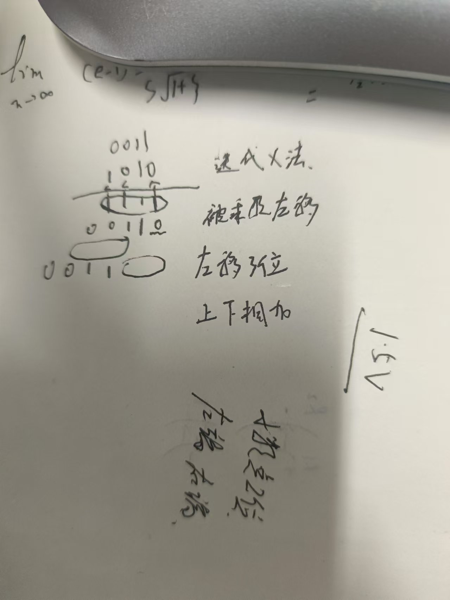

类似c++
编程语言 不是用来编程序 用来接线…… 语言类 语法结构 一门学好
设计一个面包板 插元件 大作业 打分 红绿灯 收获总结 20个g……的vivado 单个Upan 4个g unless格式化 ppt引导 verilog 上下两行无先后顺序 类似做实验 无依赖 行为 函数 结构 输入输出 搭积木模块 ！递归 调用 仿真虚拟输入信号 节省生产成本 赋值 接线操作 连线实现功能 assignment 1 2选择器 不允许超过一页！！ 做到Increment
半加器全加器 8位 中括号 7：08位位宽bus
逻辑功能
- assign 连线 通常描述组合逻辑
- 用元件(类 类似c++语言)例化，可以用现有模块
- always 引导块语句{}时序语句
begin与end之间需要顺序执行
标识符
- 在c++基础上可以加＄号
变量类型 有包含关系
- integer 无符号整数 用：做for循环控制变量
- parameter 常量类型 类似const 同时是参数
- reg (ister)暂存一个变量 穿的过程中可以存
- wire连线 不暂存信号 传的过程不存
常量
x 任意1|0 z 高阻 负数 原反补码 interger 第一个想的应该是位宽bus 位宽指的是二进制数的位宽 只能用现有的常量定义新的常量
引脚约束
artix 7
fbg676
-2
testbanch不加端口
输入reg
输出wire
#5 每隔5个单位取反
3 5 素数隔离开 8为加法器 方法：每隔一段时间+1；always #5 tempa=random(32bit)%9 构造8位随机数
module fulladder( input a,input b,input ci, output sum ,output co
);
wire t1,t2,t3;
halfadder h1(a,b,t1,t2);
halfadder h2(t1,ci,sum,t3);
assign co=t2^t3;
endmodule
module halfadder( input a, input b, output sum, output carry ); assign carry=a & b; assign sum=a ^ b; endmodule
module tb1();
reg tempa,tempb; wire tsum,tc; halfadder myha(tempa.tempb,tsum,tc); initial begin tempa=1'b0; tempb=1'b0; end always #5 tempa=~tempa; always #3 tempb=~tempb; endmodule module halfadder(input a, input b,output sum,output carry ); assign carry=a&b; assign sum=a^b; endmodule
module tb2( ); reg tempa,tempb,tempc; wire tsum,tc; fulladder myha(tempa,tempb,tempc,tsum,tc); initial begin tempa=1'b0; tempb=1'b0; tempc=1'b0; end always #5 tempa=~tempa; always #3 tempb=~tempb; always #7 tempc=~tempc; endmodule module fulladder8( input [7:0] a, input [7:0] b, input ci, output [7:0] sum, output [7:0] co );
wire [7:0] internal_co; // 内部进位信号
// 实例化8个全加器
genvar i;
generate
for (i = 0; i < 8; i = i + 1) begin : fa_inst
fulladder fa (
.a(a[i]),
.b(b[i]),
.ci(i == 0 ? ci : internal_co[i-1]),
.sum(sum[i]),
.co(internal_co[i])
);
end
endgenerate
// 最高位的进位输出
assign co[7] = internal_co[7];
assign co[6:0] = internal_co[6:0];
1121
hw
- 波形截图当前时刻描述功能验证
- 代码注释
- 模块图 手绘解释 模块
运算符与表达式
- 类比c++
- 等式运算 缩减运算与c++唯一不一样
- 取最低8位 % 8位加法器随机数生成
- 不定x 所以红色
- 真假值只是1bit与c++不一样
- 括号的使用 优先级的体现
- 位运算 与逻辑运算不一样 同或？操作数位宽一样，不一样右端对齐位数少高位补齐高位反码和补码为1
- 关系运算符1位
- 等式运算 *全等与等于的区别
- 缩减运算符
- 单目运算符 与位运算的区别
- 判断一个数是否为全1 or0 或01
- 2的倍数-1？
- 移位相当于*2或/2，乘法运算 用以为来做 ×3 移1位+原来的？
//16bitfulladder
mudule adder16(input[15:0] int a
input[15:0]int b
input cin
output cout
output sum[15:0]
);
assign {cout,sum}=int a+int b+cin
//tb
五端口
reg[15:0] a,b;
reg cin;
wire[15] tsum;
wire cout
adder16 my(a,b,);
initial begin
a=16'd0;b=16'd0;cin=1'b0;
end
always #3 a=$random% 17'b
endmodule
module simpleoperation(input [7:0] ina,
input[7:0] inb,
output[7:0]sumab,
output[7:0]leftshiftA,
output lessflag,
output equalflag,
output bitXorflag
);
assign {sumflag,sumab}=ina+inb;
assign leftshiftA=ina<<inb;
assign lessflag =(ina<inb)?1'b1:1'b0;
assign equalflag = (ina==inb)? 1'b1:1'b0;
assign bitXorflag=^ina;
endmodule
module tb();
reg[7:0] ina,inb;
wire [7:0]sumab,leftshiftA;
wire lessflag,equalflag,bitXorflag;
simpleoperation myunit(ina,inb,sumab,leftshiftA,lessflag,equalflag,bitXorflag);
initial begin
ina=8'd0;
inb=8'd0;
end
always #3 ina=$random % 9'b100_000_000;
always #5 inb=$random %8'b00_000_100 ;
endmodule
- 时钟 每次移位
module counttimes( input wire [31:0] input_data, // 32位输入数据 output reg [4:0] zero_count, // 0的计数，最多为32，所以需要5位 output reg [4:0] one_count // 1的计数，最多为32，所以需要5位 ); integer i;
// 用于计数的always块 always @(*) begin // 初始化计数器 zero_count = 5'b0; one_count = 5'b0;
// 定义循环变量
// 遍历32位输入数据
for ( i = 0; i < 32; i = i + 1) begin
if (input_data[i] == 1'b0) begin
zero_count = zero_count + 5'b00001;
end else if (input_data[i] == 1'b1) begin
one_count = zero_count + 5'b00001;
end
end
end
endmodule module testbench();
// Signal declarations
// Clock sig
reg [31:0] data_in; // 32-bit input data
wire [4:0] out_0; // Output count of 0s
wire [4:0] out_1; // Output count of 1s
initial begin
data_in=$random%33'h100_000_000;
end
endmodule module testbench; reg [31:0] input_data; wire [4:0] zero_count; wire [4:0] one_count;
counttimes uut (
.input_data(input_data),
.zero_count(zero_count),
.one_count(one_count)
);
initial begin
input_data = 32'b10101010_10101010_10101010_10101010; // 示例输入
#10; // 等待10个时间单位，确保计数完成
$display("0的计数: %d, 1的计数: %d", zero_count, one_count);
end
always #5 input_data = ~input_data; // 每5个时间单位翻转输入数据
endmodule always块语句，实现一个十分频器，divider10( input clk_in,input reset, output count, output clk_out)。 其功能可以理解为将时钟降频为原来的10分之一（ 思路：对clk_in进行count计数，count取值0~9，count数到5时，clk_out由1变0， count数到10时自动归零同时clk_out由0变1）
module divider10 (
input wire clk_in, // 输入时钟
input wire reset, // 复位信号
output reg clk_out // 输出时钟
);
reg [3:0] count; // 4位计数器
always @(posedge clk_in or posedge reset) begin
if (reset) begin
count <= 0; // 复位计数器
clk_out <= 0; // 复位输出时钟
end else begin
if (count == 9) begin
count <= 0; // 计数器达到9后重置
clk_out <= ~clk_out; // 翻转输出时钟
end else begin
count <= count + 1; // 计数器加1
end
end
end
endmodule
module tb;
// 定义输入和输出信号
reg clk_in; // 输入时钟
reg reset; // 复位信号
wire clk_out; // 输出时钟
// 实例化被测模块（DUT）
divider10 uut (
.clk_in(clk_in),
.reset(reset),
.clk_out(clk_out)
);
// 初始块：设置初始条件并启动仿真
initial begin
// 初始化信号
clk_in = 0;
reset = 1;
// 等待一段时间后释放复位信号
#10 reset = 0;
// 运行仿真一段时间
#500 $finish; // 仿真运行500个时间单位后结束
end
// 生成时钟信号
always #5 clk_in = ~clk_in; // 每5个时间单位翻转一次时钟信号
// 监控信号变化
endmodule
12.5 核心 语句
-
条件语句 两种 特点 判断真假再操作，块语句内部（begin end）aleays 语句内initial 也可 一般不用 位宽明确要求 改成读秒器 分频成1秒一个周期
逻辑的封闭性大类和小类分清楚 case语句没有break 铭感表达式的值可能出现x或z 一定要覆盖所有情况。其余放在default 代码 1111 优先级
if一定要对应一个else 逻辑封闭性 两位位宽四种情况，保证位宽所有的值都要有对应的情况 * 循环 同样也有先后顺序 always块语句内部 巧妙 sum[2] sum>4 同计数器 熟悉 例二 乘法做累加 a左移 *2 迭代乘法 aleays语句内部有触发器

module multiple_32(outcome,a,b);
parameter size=32; //位宽
output[2*size-1:0] outcome;
input[size-1:0] a,b;
reg [2*size-1:0] outcome ;
integer i;//循环变量
always@(a or b)
begin
outcome=64'h0000;
for(i=0;i<=size;i=i+1)
if(b[i])
outcome=outcome + (a<<i);//迭代乘法
end
endmodule
module tb();
// 定义参数
parameter size = 32;
// 声明信号
reg [size-1:0] a, b;
wire [2*size-1:0] outcome;
// 实例化被测模块
multiple_32 test(.outcome(outcome), .a(a), .b(b));
// 初始化
initial begin
a = 32'd0;
b = 32'd0;
#10; // 等待一段时间以观察初始状态
end
// 生成随机输入
always #32 a=$random % 33'h100;
always #32 b=$random %33'h100;
// 监控输出
initial begin
$monitor("At time %t, a = %d, b = %d, outcome = %d", $time, a, b, outcome);
end
// 结束仿真
initial begin
#1000 $finish; // 仿真运行1000个时间单位后结束
end
endmodule
always @(posedge clk or negedge rst_n) begin
if (!rst_n) begin
count <= 6'd0; // 复位时计数器清零
overflow <= 0; // 清除溢出信号
end else if (inc) begin
if (count == 59) begin
count <= 6'd0; // 溢出后计数器归零
overflow <= 1; // 设置溢出信号
end else begin
count <= count + 1; // 计数器加1
overflow <= 0; // 清除溢出信号
end
end
end
endmodule module SevenSegment( input [5:0] count, // 计数器值（6位） output reg [6:0] seg1, // 个位数码管显示 output reg [6:0] seg2 // 十位数码管显示 );
// 数码管显示编码（七段显示编码，共阴极数码管）
reg [6:0] seg_map [0:9];
initial begin
// 数码管段的编码（共阴数码管）
seg_map[0] = 7'b0111111; // 0
seg_map[1] = 7'b0000110; // 1
seg_map[2] = 7'b1011011; // 2
seg_map[3] = 7'b1001111; // 3
seg_map[4] = 7'b1100110; // 4
seg_map[5] = 7'b1101101; // 5
seg_map[6] = 7'b1111101; // 6
seg_map[7] = 7'b0000111; // 7
seg_map[8] = 7'b1111111; // 8
seg_map[9] = 7'b1101111; // 9
end
always @(count) begin
seg1 = seg_map[count % 10]; // 个位显示
seg2 = seg_map[count / 10]; // 十位显示
end
endmodule module OverflowIndicator( input overflow, // 溢出信号 output reg led_overflow // 溢出指示灯 );
always @(overflow) begin
if (overflow) begin
led_overflow <= 1; // 溢出时LED亮
end else begin
led_overflow <= 0; // 无溢出时LED熄灭
end
end
endmodule module TopModule( input clk, // 时钟信号 input rst_n, // 复位信号（低有效） input inc, // 增加计数的信号（拨码开关或按键） output [6:0] seg1, // 第一位数码管的段选择信号 output [6:0] seg2, // 第二位数码管的段选择信号 output led_overflow // 溢出指示灯 );
// 内部信号定义
wire [5:0] count;
wire overflow;
// 实例化计数器模块
Counter counter_inst (
.clk(clk),
.rst_n(rst_n),
.inc(inc),
.count(count),
.overflow(overflow)
);
// 实例化数码管显示模块
SevenSegment seven_segment_inst (
.count(count),
.seg1(seg1),
.seg2(seg2)
);
// 实例化溢出指示模块
OverflowIndicator overflow_inst (
.overflow(overflow),
.led_overflow(led_overflow)
);
endmodule `timescale 1ns / 1ps
module TopModule_tb;
// 测试信号声明
reg clk; // 时钟信号
reg rst_n; // 复位信号（低有效）
reg inc; // 增加计数的信号（拨码开关或按键）
wire [6:0] seg1; // 第一位数码管的段选择信号
wire [6:0] seg2; // 第二位数码管的段选择信号
wire led_overflow; // 溢出指示灯
// 实例化顶层模块
TopModule uut (
.clk(clk),
.rst_n(rst_n),
.inc(inc),
.seg1(seg1),
.seg2(seg2),
.led_overflow(led_overflow)
);
// 时钟生成
always begin
#5 clk = ~clk; // 每5ns翻转一次时钟，频率为100MHz
end
// 测试过程
initial begin
// 初始化信号
clk = 0;
rst_n = 0;
inc = 0;
// 复位测试
$display("==== 复位测试 ====");
rst_n = 0; // 激活复位
#10;
rst_n = 1; // 解除复位
#10;
// 模拟按下增计数按钮
$display("==== 增计数测试 ====");
inc = 1;
#10; // 计数器增加1
inc = 0;
#10;
inc = 1;
#10; // 计数器再次增加1
inc = 0;
#10;
// 达到59时溢出测试
$display("==== 溢出测试 ====");
// 将计数器设置为59
repeat(59) begin
inc = 1;
#10;
inc = 0;
#10;
end
// 模拟溢出后，检查led_overflow是否点亮
inc = 1;
#10; // 应该回到0并激活溢出LED
inc = 0;
#10;
// 再次增计数，测试正常计数过程
$display("==== 再次增计数 ====");
inc = 1;
#10;
inc = 0;
#10;
// 完成测试
$finish;
end
// 打印波形
initial begin
$dumpfile("TopModule_tb.vcd"); // VCD文件用于波形查看
$dumpvars(0, TopModule_tb); // 指定dump的信号
end
endmodule `timescale 1ns / 1ps ////////////////////////////////////////////////////////////////////////////////// // Company: // Engineer: // // Create Date: 2024/12/20 20:02:27 // Design Name: // Module Name: counters // Project Name: // Target Devices: // Tool Versions: // Description: 数码管计数器设计，包含分频、计数、数码管显示与溢出指示功能 // // Dependencies: // // Revision: // Revision 0.01 - File Created // Additional Comments: // ////////////////////////////////////////////////////////////////////////////////// // 分频器模块 module ClockDivider( input clk_in, // 全局时钟输入（100 MHz） input rst_n, // 复位信号（低有效） output reg clk_out // 分频后的时钟输出 );
reg [26:0] cnt; // 分频计数器（适合1 Hz分频）
localparam DIV_VAL = 27'd100_000_000; // 分频系数，100 MHz 除以 2 得到 1 Hz
always @(posedge clk_in or negedge rst_n) begin
if (!rst_n) begin
cnt <= 27'd0;
clk_out <= 0;
end else if (cnt == DIV_VAL - 27'd1) begin
cnt <= 27'd0;
clk_out <= ~clk_out; // 翻转输出时钟
end else begin
cnt <= cnt +27'd1;
end
end
endmodule
// 计数器模块 module Counter( input clk, // 时钟信号 input rst_n, // 复位信号（低有效） input inc, // 增加计数的信号（按键或拨码开关） output reg [5:0] count, // 计数器值（6位） output reg overflow // 溢出信号 );
always @(posedge clk or negedge rst_n) begin
if (!rst_n) begin
count <= 6'd0; // 复位时计数器清零
overflow <= 0; // 清除溢出信号
end else if (inc) begin
if (count == 59) begin
count <= 6'd0; // 溢出后计数器归零
overflow <= 1; // 设置溢出信号
end else begin
count <= count + 6'd1; // 计数器加1
overflow <= 0; // 清除溢出信号
end
end
end
endmodule
// 数码管显示模块 module SevenSegment( input [5:0] count, // 计数器值（6位） output reg [6:0] seg1, // 个位数码管显示 output reg [6:0] seg2 // 十位数码管显示 );
// 数码管显示编码（七段显示编码，共阴极数码管）
reg [6:0] seg_map [0:9];
initial begin
// 数码管段的编码（共阴数码管）
seg_map[0] = 7'b0111111; // 0
seg_map[1] = 7'b0000110; // 1
seg_map[2] = 7'b1011011; // 2
seg_map[3] = 7'b1001111; // 3
seg_map[4] = 7'b1100110; // 4
seg_map[5] = 7'b1101101; // 5
seg_map[6] = 7'b1111101; // 6
seg_map[7] = 7'b0000111; // 7
seg_map[8] = 7'b1111111; // 8
seg_map[9] = 7'b1101111; // 9
end
always @(count) begin
seg1 = seg_map[count % 10]; // 个位显示
seg2 = seg_map[count / 10]; // 十位显示
end
endmodule
// 溢出指示模块 module OverflowIndicator( input overflow, // 溢出信号 output reg led_overflow // 溢出指示灯 );
always @(overflow) begin
if (overflow) begin
led_overflow <= 1; // 溢出时LED亮
end else begin
led_overflow <= 0; // 无溢出时LED熄灭
end
end
endmodule module counters( input clk, // 全局时钟输入（100 MHz） input rst_n, // 全局复位信号（低有效） input inc, // 增加计数的信号（拨码开关或按键） output [6:0] seg, // 数码管段选择信号 output [7:0] digit_sel, // 数码管位选择信号 output led_overflow // 溢出指示灯 );
// 分频后的时钟信号
wire clk_1Hz;
wire scan_clk;
// 分频器实例化（1 Hz 时钟）
ClockDivider clk_div_inst (
.clk_in(clk), // 输入 100 MHz 时钟
.rst_n(rst_n), // 复位信号
.clk_out(clk_1Hz) // 输出 1 Hz 时钟
);
// 动态扫描分频器（生成扫描时钟）
reg [15:0] scan_counter;
always @(posedge clk or negedge rst_n) begin
if (!rst_n)
scan_counter <= 16'd0;
else
scan_counter <= scan_counter + 1;
end
assign scan_clk = scan_counter[15]; // 扫描时钟
// 内部信号定义
wire [5:0] count;
wire overflow;
reg [1:0] digit_select;
reg [7:0] digit_sel_reg;
reg [6:0] seg_reg;
// 计数器模块实例化
Counter counter_inst (
.clk(clk_1Hz), // 使用分频后的 1 Hz 时钟
.rst_n(rst_n), // 复位信号
.inc(inc), // 增加计数信号
.count(count), // 输出计数值
.overflow(overflow) // 输出溢出信号
);
// 动态扫描的位选逻辑（只激活两位）
always @(posedge scan_clk or negedge rst_n) begin
if (!rst_n)
digit_select <= 2'b00;
else
digit_select <= digit_select + 1;
end
always @(*) begin
case (digit_select)
2'b00: digit_sel_reg = 8'b00000001; // 激活第一个数码管（个位）
2'b01: digit_sel_reg = 8'b00000010; // 激活第二个数码管（十位）
default: digit_sel_reg = 8'b00000000; // 未激活
endcase
end
assign digit_sel = digit_sel_reg;
// 动态扫描段选信号生成
always @(*) begin
case (digit_select)
2'b00: seg_reg = seg_map[count % 10]; // 个位数
2'b01: seg_reg = seg_map[(count / 10) % 10]; // 十位数
default: seg_reg = 7'b0000000; // 默认熄灭
endcase
end
assign seg = seg_reg;
// 溢出指示灯模块实例化
OverflowIndicator overflow_inst (
.overflow(overflow), // 输入溢出信号
.led_overflow(led_overflow) // 输出溢出指示灯
);
// 数码管段选映射
reg [6:0] seg_map [0:9];
initial begin
seg_map[0] = 7'b0111111; // 0
seg_map[1] = 7'b0000110; // 1
seg_map[2] = 7'b1011011; // 2
seg_map[3] = 7'b1001111; // 3
seg_map[4] = 7'b1100110; // 4
seg_map[5] = 7'b1101101; // 5
seg_map[6] = 7'b1111101; // 6
seg_map[7] = 7'b0000111; // 7
seg_map[8] = 7'b1111111; // 8
seg_map[9] = 7'b1101111; // 9
end
endmodule
`timescale 1ns / 1ps ////////////////////////////////////////////////////////////////////////////////// // Company: // Engineer: // // Create Date: 2024/12/23 00:35:15 // Design Name: // Module Name: sm_ip // Project Name: // Target Devices: // Tool Versions: // Description: // // Dependencies: // // Revision: // Revision 0.01 - File Created // Additional Comments: // ////////////////////////////////////////////////////////////////////////////////// //数码管 ip 核 module smg_ip_model(clk,data,sm_wei,sm_duan); input clk; input [15:0] data; output [3:0] sm_wei; output [7:0] sm_duan; //---------------------------------------------------------- //分频 integer clk_cnt; reg clk_400Hz; always @(posedge clk) if(clk_cnt==32'd100000) begin clk_cnt <= 1'b0; clk_400Hz <= ~clk_400Hz;end else clk_cnt <= clk_cnt + 1'b1; //---------------------------------------------------------- //位控制 reg [3:0]wei_ctrl=4'b1110; always @(posedge clk_400Hz) wei_ctrl <= {wei_ctrl[2:0],wei_ctrl[3]}; //段控制 reg [3:0]duan_ctrl; always @(wei_ctrl) case(wei_ctrl) 4'b1110:duan_ctrl=data[3:0]; 4'b1101:duan_ctrl=data[7:4]; 4'b1011:duan_ctrl=data[11:8]; 4'b0111:duan_ctrl=data[15:12]; default:duan_ctrl=4'hf; endcase //---------------------------------------------------------- //解码模块 reg [7:0]duan; always @(duan_ctrl) case(duan_ctrl) 4'h0:duan=8'b0011_1111;//0 4'h1:duan=8'b0000_0110;//1 4'h2:duan=8'b0101_1011;//2 4'h3:duan=8'b0100_1111;//3 4'h4:duan=8'b0110_0110;//4 4'h5:duan=8'b0110_1101;//5 4'h6:duan=8'b0111_1101;//6 4'h7:duan=8'b0000_0111;//7 4'h8:duan=8'b0111_1111;//8 4'h9:duan=8'b0110_1111;//9 4'ha:duan=8'b0111_0111;//a 4'hb:duan=8'b0111_1100;//b 4'hc:duan=8'b0011_1001;//c 4'hd:duan=8'b0101_1110;//d 4'he:duan=8'b0111_1000;//e 4'hf:duan=8'b0111_0001;//f // 4'hf:duan=8'b1111_1111;//不显示 default : duan = 8'b0011_1111;//0 endcase //---------------------------------------------------------- assign sm_wei =~wei_ctrl; assign sm_duan = duan; endmodule
//测试数码管 ip module test(clk,data); input clk; output [15:0]data; //---------------------------------------------------------- //分频 1Hz reg clk_1Hz; integer clk_1Hz_cnt; always @(posedge clk) if(clk_1Hz_cnt==32'd25000000-1) begin clk_1Hz_cnt <= 1'b0; clk_1Hz <= ~clk_1Hz;end else clk_1Hz_cnt <= clk_1Hz_cnt + 1'b1; //---------------------------------------------------------- //循环显示 0-9 reg [39:0]disp=40'h1234567890; reg [15:0]data; always @(posedge clk_1Hz) begin disp <= {disp[35:0],disp[39:36]}; data <= disp[39:24]; end endmodule
//顶层模块
module smg_ip( input clk, // 全局时钟输入 input rst_n, // 复位信号（低有效） input inc, // 增加计数的按键信号 output [3:0] sm_wei, // 数码管位选 output [7:0] sm_duan, // 数码管段选 output led_overflow // 溢出指示灯 );
// 内部信号定义
reg [5:0] count; // 计数器值（0-59）
reg overflow; // 溢出信号
wire inc_edge; // 按键上升沿检测信号
wire [15:0] display_data; // 数码管显示数据
// 分频模块（1 Hz时钟生成）
reg [25:0] clk_div_cnt;
reg clk_1Hz_reg;
always @(posedge clk or negedge rst_n) begin
if (!rst_n) begin
clk_div_cnt <= 26'd0;
clk_1Hz_reg <= 1'b0;
end else if (clk_div_cnt == 26'd50_000_000 - 1) begin
clk_div_cnt <= 26'd0;
clk_1Hz_reg <= ~clk_1Hz_reg;
end else begin
clk_div_cnt <= clk_div_cnt + 1;
end
end
wire clk_1Hz = clk_1Hz_reg;
// 按键去抖与上升沿检测
reg inc_reg1, inc_reg2;
always @(posedge clk or negedge rst_n) begin
if (!rst_n) begin
inc_reg1 <= 1'b0;
inc_reg2 <= 1'b0;
end else begin
inc_reg1 <= inc;
inc_reg2 <= inc_reg1;
end
end
assign inc_edge = inc_reg1 & ~inc_reg2; // 检测 inc 的上升沿
// 计数器逻辑
always @(posedge clk or negedge rst_n) begin
if (!rst_n) begin
count <= 6'd0;
overflow <= 1'b0;
end else if (inc_edge) begin
if (count == 6'd59) begin
count <= 6'd0;
overflow <= 1'b1; // 溢出时指示灯点亮
end else begin
count <= count + 1;
overflow <= 1'b0; // 清除溢出信号
end
end
end
// 数码管显示数据生成
assign display_data = {4'h0, count / 10, 4'h0, count % 10};
// 数码管驱动实例化
smg_ip_model smg_driver (
.clk(clk),
.data(display_data),
.sm_wei(sm_wei),
.sm_duan(sm_duan)
);
// 溢出指示灯
assign led_overflow = overflow;
endmodule
module test(clk,data,out_LED3_NS,out_LED3_WE);
input clk;
output [15:0]data;
output [2:0] out_LED3_NS,out_LED3_WE;
//分频 1Hz
reg clk_1Hz;
integer clk_1Hz_cnt;
always @(posedge clk)
if(clk_1Hz_cnt==32'd25000000-1)
begin clk_1Hz_cnt <= 1'b0; clk_1Hz <= ~clk_1Hz;end
else
clk_1Hz_cnt <= clk_1Hz_cnt + 1'b1;
//----------------------------------------------------------
//循环显示 0-9
reg [15:0]data;
reg[2:0] out_LED3_NS,out_LED3_WE;
reg[3:0] Time_10=2'd2,Time_1=2'd0;
reg[1:0] Stage=2'b00;
always @(posedge clk_1Hz)
begin
case(Stage)
2'b00:
begin//NS pass
if((Time_10==0) & (Time_1==0)) begin
Stage<=2'b11;
Time_10<=4'd1;
Time_1 <=4'd0;
end
else
begin
if(Time_1==0)
begin
Time_1<=4'd9;
Time_10<=Time_10-1;
end
else
end
begin
Time_1<=Time_1-1;
end
data[15:8]<={Time_10,Time_1};
data[7:0]<={Time_10,Time_1};
out_LED3_NS<=3'b001;
out_LED3_WE<=3'b100;
end
2'b01:
begin//WE pass
if((Time_10==0) & (Time_1==0)) begin
Stage<=2'b10;
Time_10<=4'd1;
Time_1 <=4'd0;
end
els
e begin
else
end
Time_1<=4'd9;
Time_10<=Time_10-1;
end
begin
Time_1<=Time_1-1;
end
module smg_dynamic_display( input clk, // 100MHz 时钟输入 input rst_n, // 复位信号（低有效） input inc, // 按键：计数+1 output [3:0] sm_wei, // 数码管位选 output [7:0] sm_duan, // 数码管段选 output led_overflow // 溢出指示灯 );
// 内部信号定义
reg [5:0] count; // 计数值（范围：0-59）
reg overflow; // 溢出信号
wire inc_edge; // 按键上升沿检测信号
// 动态扫描相关
wire clk_400Hz; // 动态扫描时钟
reg [1:0] scan_index; // 当前扫描的位索引（0-3）
reg [3:0] wei_ctrl; // 位选信号寄存器
reg [3:0] current_digit; // 当前扫描的数字
reg [7:0] duan_ctrl; // 段选信号寄存器
// ==================== 1. 分频器：生成 400Hz 时钟 ====================
reg [16:0] clk_div_cnt; // 分频计数器
reg clk_400Hz_reg; // 400Hz 时钟寄存器
always @(posedge clk or negedge rst_n) begin
if (!rst_n) begin
clk_div_cnt <= 17'd0;
clk_400Hz_reg <= 1'b0;
end else if (clk_div_cnt == 17'd125_000 - 1) begin
clk_div_cnt <= 17'd0;
clk_400Hz_reg <= ~clk_400Hz_reg;
end else begin
clk_div_cnt <= clk_div_cnt + 1;
end
end
assign clk_400Hz = clk_400Hz_reg;
// ==================== 2. 按键上升沿检测 ====================
reg inc_reg1, inc_reg2;
always @(posedge clk or negedge rst_n) begin
if (!rst_n) begin
inc_reg1 <= 1'b0;
inc_reg2 <= 1'b0;
end else begin
inc_reg1 <= inc;
inc_reg2 <= inc_reg1;
end
end
assign inc_edge = inc_reg1 & ~inc_reg2;
// ==================== 3. 计数器逻辑 ====================
always @(posedge clk or negedge rst_n) begin
if (!rst_n) begin
count <= 6'd0;
overflow <= 1'b0;
end else if (inc_edge) begin
if (count == 6'd59) begin
count <= 6'd0;
overflow <= 1'b1; // 溢出时点亮指示灯
end else begin
count <= count + 1;
overflow <= 1'b0; // 清除溢出信号
end
end
end
// ==================== 4. 动态扫描逻辑 ====================
// 扫描位选信号
always @(posedge clk_400Hz or negedge rst_n) begin
if (!rst_n) begin
scan_index <= 2'd0;
end else begin
scan_index <= scan_index + 1;
end
end
// 位选信号生成
always @(*) begin
case (scan_index)
2'd0: wei_ctrl = 4'b1110; // 第一位亮
2'd1: wei_ctrl = 4'b1101; // 第二位亮
2'd2: wei_ctrl = 4'b1011; // 第三位亮
2'd3: wei_ctrl = 4'b0111; // 第四位亮
default: wei_ctrl = 4'b1111;
endcase
end
// 段选信号生成
always @(*) begin
case (scan_index)
2'd0: current_digit = count % 10; // 个位
2'd1: current_digit = count / 10; // 十位
default: current_digit = 4'd15; // 空位
endcase
case (current_digit)
4'd0: duan_ctrl = 8'b0011_1111; // 数字0
4'd1: duan_ctrl = 8'b0000_0110; // 数字1
4'd2: duan_ctrl = 8'b0101_1011; // 数字2
4'd3: duan_ctrl = 8'b0100_1111; // 数字3
4'd4: duan_ctrl = 8'b0110_0110; // 数字4
4'd5: duan_ctrl = 8'b0110_1101; // 数字5
4'd6: duan_ctrl = 8'b0111_1101; // 数字6
4'd7: duan_ctrl = 8'b0000_0111; // 数字7
4'd8: duan_ctrl = 8'b0111_1111; // 数字8
4'd9: duan_ctrl = 8'b0110_1111; // 数字9
default: duan_ctrl = 8'b0000_0000; // 不显示
endcase
end
// ==================== 5. 输出信号分配 ====================
assign sm_wei = wei_ctrl;
assign sm_duan = duan_ctrl;
assign led_overflow = overflow;
endmodule
`timescale 1ns / 1ps ////////////////////////////////////////////////////////////////////////////////// // Company: // Engineer: // // Create Date: 2024/12/30 22:47:50 // Design Name: // Module Name: test // Project Name: // Target Devices: // Tool Versions: // Description: // // Dependencies: // // Revision: // Revision 0.01 - File Created // Additional Comments: // ////////////////////////////////////////////////////////////////////////////////// //数码管 ip 核 module smg_ip_model(clk,data,sm_wei,sm_duan); input clk; input [15:0] data; output [3:0] sm_wei; output [7:0] sm_duan; //---------------------------------------------------------- //分频 integer clk_cnt; reg clk_400Hz; always @(posedge clk) if(clk_cnt==32'd100000) begin clk_cnt <= 1'b0; clk_400Hz <= ~clk_400Hz;end else clk_cnt <= clk_cnt + 1'b1; //---------------------------------------------------------- //位控制 reg [3:0]wei_ctrl=4'b1110; always @(posedge clk_400Hz) wei_ctrl <= {wei_ctrl[2:0],wei_ctrl[3]}; //段控制 reg [3:0]duan_ctrl; always @(wei_ctrl) case(wei_ctrl) 4'b1110:duan_ctrl=data[3:0]; 4'b1101:duan_ctrl=data[7:4]; 4'b1011:duan_ctrl=data[11:8]; 4'b0111:duan_ctrl=data[15:12]; default:duan_ctrl=4'hf; endcase //---------------------------------------------------------- //解码模块 reg [7:0]duan; always @(duan_ctrl) case(duan_ctrl) 4'h0:duan=8'b0011_1111;//0 4'h1:duan=8'b0000_0110;//1 4'h2:duan=8'b0101_1011;//2 4'h3:duan=8'b0100_1111;//3 4'h4:duan=8'b0110_0110;//4 4'h5:duan=8'b0110_1101;//5 4'h6:duan=8'b0111_1101;//6 4'h7:duan=8'b0000_0111;//7 4'h8:duan=8'b0111_1111;//8 4'h9:duan=8'b0110_1111;//9 4'ha:duan=8'b0111_0111;//a 4'hb:duan=8'b0111_1100;//b 4'hc:duan=8'b0011_1001;//c 4'hd:duan=8'b0101_1110;//d 4'he:duan=8'b0111_1000;//e 4'hf:duan=8'b0111_0001;//f 4'hg:duan=8'b1111_1111;//不显示 default : duan = 8'b0011_1111;//0 endcase //---------------------------------------------------------- assign sm_wei =~wei_ctrl; assign sm_duan = duan; endmodule
module test(clk,data,out_LED3_NS,out_LED3_WE); input clk; output [15:0]data; output [2:0] out_LED3_NS,out_LED3_WE; //分频 1Hz reg clk_1Hz; integer clk_1Hz_cnt; always @(posedge clk) if(clk_1Hz_cnt==32'd25000000-1) begin clk_1Hz_cnt <= 1'b0; clk_1Hz <= ~clk_1Hz;end else clk_1Hz_cnt <= clk_1Hz_cnt + 1'b1; //---------------------------------------------------------- //循环显示 0-9 reg [15:0]data; reg[2:0] out_LED3_NS,out_LED3_WE; reg[3:0] Time_10=2'd2,Time_1=2'd0; reg[1:0] Stage=2'b00; always @(posedge clk_1Hz) begin case(Stage) 2'b00: begin//NS pass if((Time_10==0) & (Time_1==0)) begin Stage<=2'b11; Time_10<=4'd1; Time_1 <=4'd0; end else begin if(Time_1==0) begin Time_1<=4'd9; Time_10<=Time_10-1; end else
begin Time_1<=Time_1-1; end end data[15:8]<={Time_10,Time_1}; data[7:0]<={Time_10,Time_1}; out_LED3_NS<=3'b001; out_LED3_WE<=3'b100; end 2'b01: begin//WE pass if((Time_10==0) & (Time_1==0)) begin Stage<=2'b10; Time_10<=4'd1; Time_1 <=4'd0; end else begin if(Time_1==0) begin
Time_1<=4'd9; Time_10<=Time_10-1; end else begin Time_1<=Time_1-1; end end data[15:8]<={Time_10,Time_1}; data[7:0]<={Time_10,Time_1}; out_LED3_WE<=3'b001; out_LED3_NS<=3'b100; end 2'b10: begin//Yellow to NS pass if((Time_10==0) & (Time_1==0)) begin Stage<=2'b00; Time_10<=4'd2; Time_1 <=4'd0; end else begin if(Time_1==0) begin Time_1<=4'd9; Time_10<=Time_10-1; end else
begin Time_1<=Time_1-1; end end data[15:8]<={Time_10,Time_1}; data[7:0]<={Time_10,Time_1}; out_LED3_NS<=3'b010; out_LED3_WE<=3'b010; end 2'b11: begin//Yellow to WE pass if((Time_10==0) & (Time_1==0)) begin Stage<=2'b01; Time_10<=4'd2; Time_1 <=4'd0; end else begin if(Time_1==0) begin Time_1<=4'd9; Time_10<=Time_10-1; end else
begin Time_1<=Time_1-1; end end data[15:8]<={Time_10,Time_1}; data[7:0]<={Time_10,Time_1}; out_LED3_NS<=3'b010; out_LED3_WE<=3'b010; end default: begin Stage<=2'b00; Time_10<=4'd2; Time_1<=4'd0; end endcase end endmodule module smg(clk,sm_wei,sm_duan,out_LED3_NS,out_LED3_WE); input clk; output [3:0]sm_wei; output [7:0]sm_duan; output [2:0] out_LED3_NS,out_LED3_WE; //---------------------------------------------------------- wire [15:0]data; wire [3:0]sm_wei; wire [7:0]sm_duan; wire [2:0] out_LED3_NS,out_LED3_WE; //---------------------------------------------------------- test U0 (.clk(clk),.data(data),.out_LED3_NS(out_LED3_NS),.out_LED3_WE(out_LED3_WE)); smg_ip_model U1 (.clk(clk),.data(data),.sm_wei(sm_wei),.sm_duan(sm_duan)); endmodule
set_property PACKAGE_PIN P17 [get_ports clk] set_property IOSTANDARD LVCMOS33 [get_ports clk] set_property PACKAGE_PIN G2 [get_ports {sm_wei[0]}] set_property PACKAGE_PIN C2 [get_ports {sm_wei[1]}] set_property PACKAGE_PIN C1 [get_ports {sm_wei[2]}] set_property PACKAGE_PIN H1 [get_ports {sm_wei[3]}] set_property PACKAGE_PIN B4 [get_ports {sm_duan[0]}] set_property PACKAGE_PIN A4 [get_ports {sm_duan[1]}] set_property PACKAGE_PIN A3 [get_ports {sm_duan[2]}] set_property PACKAGE_PIN B1 [get_ports {sm_duan[3]}] set_property PACKAGE_PIN A1 [get_ports {sm_duan[4]}] set_property PACKAGE_PIN B3 [get_ports {sm_duan[5]}] set_property PACKAGE_PIN B2 [get_ports {sm_duan[6]}] set_property PACKAGE_PIN D5 [get_ports {sm_duan[7]}] set_property PACKAGE_PIN G3 [get_ports {out_LED3_WE[0]}] set_property IOSTANDARD LVCMOS33 [get_ports {sm_duan[2]}] set_property IOSTANDARD LVCMOS33 [get_ports {sm_duan[1]}] set_property IOSTANDARD LVCMOS33 [get_ports {sm_duan[0]}] set_property IOSTANDARD LVCMOS33 [get_ports {sm_wei[3]}] set_property IOSTANDARD LVCMOS33 [get_ports {sm_wei[2]}] set_property IOSTANDARD LVCMOS33 [get_ports {sm_wei[1]}] set_property IOSTANDARD LVCMOS33 [get_ports {sm_wei[0]}]
// 数码管IP核模块，用于控制数码管显示
module smg_ip_model(clk, data, sm_wei, sm_duan);
input clk; // 输入时钟信号
input [15:0] data; // 输入数据，用于数码管显示的内容
output [3:0] sm_wei; // 位选信号，用于控制数码管的位
output [7:0] sm_duan; // 段选信号，用于控制数码管的段
//----------------------------------------------------------
// 分频模块：将输入时钟分频为约400Hz的时钟
integer clk_cnt;
reg clk_400Hz;
always @(posedge clk)
if(clk_cnt == 32'd100000) begin
clk_cnt <= 1'b0;
clk_400Hz <= ~clk_400Hz;
end else
clk_cnt <= clk_cnt + 1'b1;
//----------------------------------------------------------
// 位控制：控制当前显示的数码管位（轮流选择）
reg [3:0] wei_ctrl = 4'b1110;
always @(posedge clk_400Hz)
wei_ctrl <= {wei_ctrl[2:0], wei_ctrl[3]}; // 循环移位
// 段控制：根据当前位控制信号选择相应的数据位
reg [3:0] duan_ctrl;
always @(wei_ctrl)
case(wei_ctrl)
4'b1110: duan_ctrl = data[3:0]; // 显示最低位
4'b1101: duan_ctrl = data[7:4]; // 显示第二位
4'b1011: duan_ctrl = data[11:8]; // 显示第三位
4'b0111: duan_ctrl = data[15:12]; // 显示最高位
default: duan_ctrl = 4'hf; // 默认值
endcase
//----------------------------------------------------------
// 解码模块：将4位二进制数据解码为数码管的段选信号
reg [7:0] duan;
always @(duan_ctrl)
case(duan_ctrl)
4'h0: duan = 8'b0011_1111; // 数字0
4'h1: duan = 8'b0000_0110; // 数字1
4'h2: duan = 8'b0101_1011; // 数字2
4'h3: duan = 8'b0100_1111; // 数字3
4'h4: duan = 8'b0110_0110; // 数字4
4'h5: duan = 8'b0110_1101; // 数字5
4'h6: duan = 8'b0111_1101; // 数字6
4'h7: duan = 8'b0000_0111; // 数字7
4'h8: duan = 8'b0111_1111; // 数字8
4'h9: duan = 8'b0110_1111; // 数字9
4'ha: duan = 8'b0111_0111; // 字母A
4'hb: duan = 8'b0111_1100; // 字母B
4'hc: duan = 8'b0011_1001; // 字母C
4'hd: duan = 8'b0101_1110; // 字母D
4'he: duan = 8'b0111_1000; // 字母E
4'hf: duan = 8'b0111_0001; // 字母F
default: duan = 8'b1111_1111; // 默认值（不显示）
endcase
//----------------------------------------------------------
// 输出信号：将位选信号和段选信号输出
assign sm_wei = ~wei_ctrl; // 取反后输出位选信号
assign sm_duan = duan; // 输出段选信号
endmodule
// 测试模块，模拟交通灯和数码管显示逻辑 module test(clk, data, out_LED3_NS, out_LED3_WE); input clk; // 输入时钟信号 output reg [15:0] data; // 输出数据，用于数码管显示 output reg [2:0] out_LED3_NS; // 南北方向交通灯状态 output reg [2:0] out_LED3_WE; // 东西方向交通灯状态
// 分频模块：将输入时钟分频为1Hz的时钟
reg clk_1Hz;
integer clk_1Hz_cnt;
always @(posedge clk)
if(clk_1Hz_cnt == 32'd25000000 - 1) begin
clk_1Hz_cnt <= 1'b0;
clk_1Hz <= ~clk_1Hz;
end else
clk_1Hz_cnt <= clk_1Hz_cnt + 1'b1;
//----------------------------------------------------------
// 交通灯状态机与计时器
reg [3:0] Time_10 = 4'd2, Time_1 = 4'd0; // 计时器：十位和个位
reg [1:0] Stage = 2'b00; // 状态机：当前交通灯状态
always @(posedge clk_1Hz) begin
case(Stage)
2'b00: begin // 南北方向通过（绿灯）
if ((Time_10 == 0) && (Time_1 == 0)) begin
Stage <= 2'b11; // 切换到南北黄灯
Time_10 <= 4'd1;
Time_1 <= 4'd0;
end else begin
if (Time_1 == 0) begin // 十位减1，个位归9
Time_1 <= 4'd9;
Time_10 <= Time_10 - 1;
end else
Time_1 <= Time_1 - 1;
end
data[15:8] <= {Time_10, Time_1}; // 南北显示时间
data[7:0] <= {Time_10, Time_1}; // 东西显示时间
out_LED3_NS <= 3'b001; // 南北绿灯
out_LED3_WE <= 3'b100; // 东西红灯
end
2'b01: begin // 东西方向通过（绿灯）
if ((Time_10 == 0) && (Time_1 == 0)) begin
Stage <= 2'b10; // 切换到东西黄灯
Time_10 <= 4'd1;
Time_1 <= 4'd0;
end else begin
if (Time_1 == 0) begin
Time_1 <= 4'd9;
Time_10 <= Time_10 - 1;
end else
Time_1 <= Time_1 - 1;
end
data[15:8] <= {Time_10, Time_1};
data[7:0] <= {Time_10, Time_1};
out_LED3_WE <= 3'b001; // 东西绿灯
out_LED3_NS <= 3'b100; // 南北红灯
end
2'b10: begin // 南北黄灯
if ((Time_10 == 0) && (Time_1 == 0)) begin
Stage <= 2'b00; // 切换到南北绿灯
Time_10 <= 4'd2;
Time_1 <= 4'd0;
end else begin
if (Time_1 == 0) begin
Time_1 <= 4'd9;
Time_10 <= Time_10 - 1;
end else
Time_1 <= Time_1 - 1;
end
data[15:8] <= {Time_10, Time_1};
data[7:0] <= {Time_10, Time_1};
out_LED3_NS <= 3'b010; // 南北黄灯
out_LED3_WE <= 3'b010; // 东西黄灯
end
2'b11: begin // 东西黄灯
if ((Time_10 == 0) && (Time_1 == 0)) begin
Stage <= 2'b01; // 切换到东西绿灯
Time_10 <= 4'd2;
Time_1 <= 4'd0;
end else begin
if (Time_1 == 0) begin
Time_1 <= 4'd9;
Time_10 <= Time_10 - 1;
end else
Time_1 <= Time_1 - 1;
end
data[15:8] <= {Time_10, Time_1};
data[7:0] <= {Time_10, Time_1};
out_LED3_NS <= 3'b010; // 南北黄灯
out_LED3_WE <= 3'b010; // 东西黄灯
end
default: begin // 默认初始化状态
Stage <= 2'b00;
Time_10 <= 4'd2;
Time_1 <= 4'd0;
end
endcase
end
endmodule
// 顶层模块：将测试模块和数码管IP核模块连接 module smg(clk, sm_wei, sm_duan, out_LED3_NS, out_LED3_WE); input clk; // 输入时钟信号 output [3:0] sm_wei; // 位选信号 output [7:0] sm_duan; // 段选信号 output [2:0] out_LED3_NS; // 南北方向交通灯状态 output [2:0] out_LED3_WE; // 东西方向交通灯状态
//----------------------------------------------------------
// 内部信号连接
wire [15:0] data;
wire [3:0] sm_wei;
wire [7:0] sm_duan;
wire [2:0] out_LED3_NS, out_LED3_WE;
//----------------------------------------------------------
// 实例化测试模块和数码管IP核模块
test U0 (.clk(clk), .data(data), .out_LED3_NS(out_LED3_NS), .out_LED3_WE(out_LED3_WE));
smg_ip_model U1 (.clk(clk), .data(data), .sm_wei(sm_wei), .sm_duan(sm_duan));
endmodule